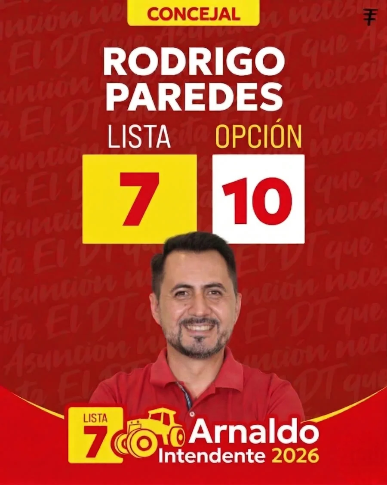

Cargando

"Asunción ya no necesita promesas.
Necesita Acciones."
— Rodrigo Paredes
Clic para abrir el libro
¡Hola! Soy Rodrigo Paredes y te doy la más cordial bienvenida a este espacio, el corazón digital de un proyecto que nace del amor por Asunción y el firme deseo de verla prosperar. Si estás aquí, es porque, al igual que yo, crees en el potencial ilimitado de nuestra ciudad y anhelas un futuro mejor para todos.
Este no es solo un sitio web; es una invitación abierta a ser parte activa de la transformación que Asunción necesita. Es el punto de encuentro para ideas, propuestas y el trabajo conjunto que nos permitirá construir una capital más justa, segura, verde y con oportunidades para cada uno de sus habitantes.
Rodrigo Paredes es un auténtico hijo de Asunción, con profundas raíces en el populoso barrio de la Santísima Trinidad, donde transcurrieron su niñez y juventud. Desde temprana edad, combinó el estudio con el trabajo, forjando una sólida ética y un conocimiento real de las necesidades de nuestra gente.
Profesional con título de Licenciado en Administración de Empresas, ha volcado su experiencia y conocimientos en la función pública, donde ha demostrado capacidad de gestión y un profundo entendimiento de los desafíos municipales. Su trayectoria es un reflejo de su compromiso con la eficiencia y la transparencia.
Hoy, como padre de cuatro hijos, su principal motivación es construir una Asunción próspera y segura. "Como padre, busco dejar un legado de una ciudad mejor para mis hijos y para todos los asuncenos", afirma.
Representar activamente los intereses de los ciudadanos de Asunción en la Junta Municipal, impulsando políticas públicas transparentes, eficientes e inclusivas que promuevan el desarrollo sostenible, mejoren la calidad de vida de todos los habitantes y fortalezcan la participación ciudadana en la construcción de una capital más próspera y equitativa.
Una Asunción líder en la región, reconocida por su gestión municipal innovadora y transparente, sus espacios públicos vibrantes y seguros, su economía dinámica que genera oportunidades para todos, y una ciudadanía activa y comprometida con el bienestar colectivo. Donde cada asunceno se sienta orgulloso de su hogar y tenga las herramientas para alcanzar su máximo potencial.
Como Concejal, mi compromiso se centra en:
Abrir la gestión municipal a los ciudadanos y fomentar su involucramiento.
Mejorar la gestión de residuos, promover el reciclaje y cuidar nuestros espacios verdes.
Optimizar calles, transporte público y fomentar la movilidad alternativa.
Apoyar a emprendedores y PyMES, simplificando trámites y generando oportunidades.
Fortalecer la seguridad en cada barrio con iluminación, vigilancia y participación vecinal.
Trabajaremos juntos por una Asunción más próspera, segura y justa para todos.
Mi gestión se enfocará en objetivos claros y medibles para cada área clave:
Con la mirada puesta en el futuro de Asunción. Domingo 7 de junio votá Lista 7, Opción 10. Juntos, dejaremos un legado de bienestar para nuestras familias. ¡Súmate!
Menos promesas, más acción: trabajemos juntos por cada barrio de Asunción.